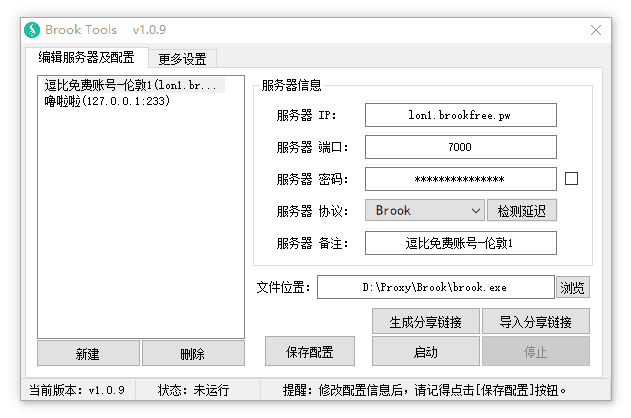
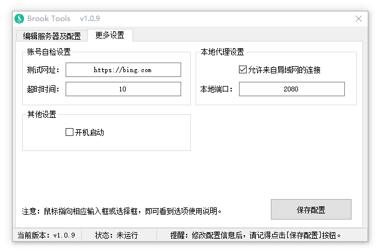
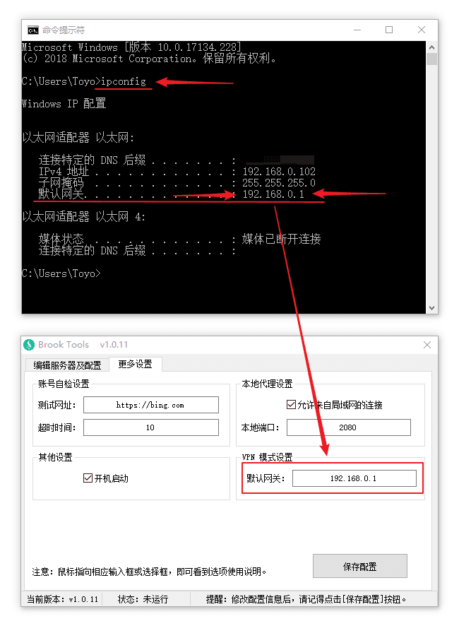

看到很多人反映 Brook Windows系统的客户端不好用什么的，我就简单写了个 客户端UI ，参考了SSR的使用习惯，实现了各种功能，对于使用过SSR客户端的人来说应该很容易上手。
Brook Linux 一键脚本：『原创』一个优秀的跨平台 Socks5代理软件 —— Brook 一键安装管理脚本
Brook Linux 手动教程：一个优秀的跨平台 Socks5代理软件 —— Brook 服务端教程
Brook 客户端教程：Brook代理 Windows/Android版客户端简单使用教程
Brook 一键脚本及 Brook Tools 视频教程：『视频』Brook 代理 一键脚本及客户端 小白使用教程
其他 Brook 教程请看：https://doub.io/tag/brook/
当前版本：1.0.14
主要功能
- 支持 多服务器管理
- 支持 直连模式、PAC模式、全局模式
- 支持 生成/导入 分享链接功能（编码格式遵循 Brook 官方标准）
- 支持 VPN 模式
- 支持 账号自检
- 支持 开机启动
- 等等
直连模式说明：
PAC模式、全局模式很多人能理解是什么意思，但是部分人不清楚直连模式是什么鬼，我就简单解释一下。
你们知道 PAC模式和全局模式就是软件设置了系统代理设置，然后浏览器会读取系统代理模式，比如访问谷歌，会判断PAC内是否有谷歌域名，如果有就走代理，如果没有就直连，而全局模式则是所有网站走代理。
而直连模式则代表不设置系统代理模式，选择后会初始化系统代理设置。然后就需要在相应软件中配置代理服务器 HTTP协议 127.0.0.1 2080(默认)，这样相应软件才会走代理，例如 Chrome 浏览器代理管理扩展 SwitchyOmega（点击查看新手使用教程）。
注意：Brook Tools 默认是 HTTP协议（以HTTP方式启动），如果需要使用 SOCKS5协议，请取消勾选。
截图展示


使用方法
本软件是一个辅助软件（可视化UI操作），他无法独立使用，需要配合 Brook Windows命令行版客户端使用。
所以要使用该软件请先下载 Brook Windows命令行版客户端：逗比云地址 、Github地址（请选择 brook_windows_386.exe 或 brook_windows_amd64.exe）。
注意：不是 钥匙图标 的那个 Brook Windows 客户端！不要下载错客户端，该软件需要的是命令行的客户端。
为了方便大家使用，我把32位和64位的命令行版客户端都集成在压缩包内了，打开软件后选择相应的命令行版客户端即可（命令行版客户端可能会经常更新，到时间请手动更新或提醒我更新压缩包）。
下载 Brook Windows命令行版客户端后，放置到任何位置（路径中不能包含中文和空格，否则PAC失效）- 下载 Brook Tools 客户端文件，解压后放置到任何位置，并运行软件。
- 运行软件后填写 Brook 账号或者导入 Brook 分享链接，并点击 浏览 按钮，选择命令行版客户端文件。
- 点击 启动 按钮（或者右键托盘菜单 - 启动）。
- 根据需求在 托盘菜单 - 代理模式 中可以选择 直连模式、PAC模式（默认）、全局模式。
无法使用？请先使用 [账号自检] 功能检测账号是否可用。
如果提示可用，那么请尝试 检查系统代理设置(点击看教程)！
如果账号不可用，那么可以试试我 免费分享的 Brook 账号！
下载地址
蓝奏云[JPG.DOG]
注意：每次更新最新版本时，因为微软审核需要一天左右的时候，所以这期间 Windows Defender 会报毒，请选择信任或者等待两天后再用。
更新内容
2018年09月21日，版本 v1.0.14
1. 取消 检查 Brook 命令行客户端(是否正确或损坏)功能。
—— 似乎问题比较多，想了想还是去掉吧（依然会检测版本号）。
2018年09月20日，版本 v1.0.13
1. 新增 手动检测更新时，如果没有更新同样也会提示（启动软件时的检测更新不会提醒）。
2. 新增 Brook 命令行版客户端添加后，将会检查是否为 Brook 命令行客户端（或是否损坏）。
3. 取消 从逗比云下载PAC(老是被墙)，改成 Github 。
点击展开 查看更多
2018年09月04日，版本 v1.0.12
1. 新增 启动程序/启动代理时，检测 brook.exe 文件是否存在。
2. 新增 通过多线程方式更新PAC文件（更新期间不再影响用户操作）。
3. 修复 当程序路径包含空格时，检测 brook.exe 命令行客户端最新版本错误的问题。
4. 修复 当程序路径包含空格时，可能会启动失败的问题。
2018年09月04日，版本 v1.0.11
1. 新增 检测 brook.exe 命令行版客户端的最新版本功能。
2. 新增 VPN模式下[账号自检]功能（不需要特意勾选[HTTP方式启动]）。
3. 优化 VPN模式（取消自动检测，需要手动指定，但只需指定网卡默认网关）。
4. 修复 一些逻辑BUG。
2018年09月03日，版本 v1.0.10
1. 新增 VPN模式（位于服务器协议选择框中）
2018年08月19日，版本 v1.0.9
1. 新增 服务器备注功能。
2. 新增 允许局域网连接功能。（如果要连接IPv6服务器，请勾选）
3. 新增 托盘图标根据代理状态而区分颜色功能。（未启动代理时，托盘图标为绿色，启动代理后，为蓝色）
4. 优化 托盘图标提示信息中加入显示当前连接的代理服务器IP及端口。
5. 优化 导入分享链接功能。
6. 优化 退出时，将会自动保存配置。
7. 取消 软件窗口置顶。
2018年05月24日，版本 v1.0.8
1. 新增 自动获取逗比云域名，避免逗比云更换域名后无法更新PAC。
2. 新增 当 Brook Tools 开机启动时，不再弹出[代理启动成功]的提示（如果启动失败依然会弹出）。
3. 修改 初始代理模式为 PAC 模式。
4. 优化 一些提示文字。
5. 去除 镜像域名相关代码（毕竟取消了）。
2018年04月05日，版本 v1.0.7
1. 新增 自定义账号自检 测试网址 与 超时时间 设置。
2. 新增 账号自检结果中将显示 测试网址 与 测试时间。\cp -f /usr/share/zoneinfo/Asia/Shanghai /etc/localtime
2018年02月20日，版本 v1.0.6
1. 新增 禁止多开 Brook Tools 功能。
—— 老是有一些人本应该选择 Brook 命令行版客户端的，结果选成了 Brook Tools，最后导致 Brook Tools 启动了 Brook Tools ，还一边说用不了用不了。。。
2018年02月01日，版本 v1.0.5
1. 新增 开机启动后，自动启动代理 并 隐藏编辑服务器的窗口。
2. 修复 开机启动失败的问题。
2018年01月31日，版本 v1.0.4
1. 新增 检测延迟 功能。
—— 窗口上的 检测延迟 按钮只能测试服务器IP输入框内的IP，而托盘菜单优先测试当前运行中的服务器IP，如果没有运行就和窗口上的 检测延迟 按钮功能一致。
2. 更新 托盘图标提示文本。
—— 加入了本地代理信息，例如：HTTP 127.0.0.1 2090
3. 调整 账号自检 功能的逻辑。
—— 不再根据 是否勾选HTTP方式启动 来设置 账号自检 功能的是否禁用了，如果不是HTTP方式启动，那么点击会自动提醒，避免了一些人不知道为什么 账号自检 功能无法点击。。。
2018年01月30日，版本 v1.0.3
1. 新增 账号自检 功能。
—— 要使用该功能，请选择你要检测的账号并启动代理，然后 [右键托盘图标 - 账号自检]，最多10秒后就会提示账号是否可用。
注意：因为协议所限，目前只支持HTTP协议账号自检，所以请勾选 [HTTP方式启动] 后再启动代理。
2. 修复 软件底部的版本号显示错误的问题。
2018年01月30日，版本 v1.0.2
1. 新增 HTTP 和 SOCKS5 启动方式切换选项。
—— 一些软件使用 HTTP协议的代理服务器 可能会无法使用，所以增加了一个切换选项在 右键托盘菜单 中。
注意：如果不以 HTTP方式启动（也就是SOCKS5方式启动），那么因为协议限制所以全局模式会禁用。
2018年01月30日，版本 v1.0.1
1. 修复 托盘菜单中 停止 选项功能错误问题。
2018年01月30日，版本 v1.0.0
1. 发布 正式版本。
注意事项
- 该软件仅支持 Windows 系统，至于 Linux 和 Mac 用户...（
 啦啦啦~）
啦啦啦~）
- Brook Tools 因为VPN模式的原因，需要管理员权限，所以启动时可能会提示授权，点击[是]即可。
- 该软件由 E语言 编写(重拾初中姿势)，所以部分杀毒软件可能报毒，我原创的软件绝对没有病毒！
其他说明
VPN模式说明
注意：Brook 的VPN模式，仅仅是让所有流量都走代理（虚拟网卡），并不专门加速游戏，游戏是否加速取决于你与代理服务器之间的延迟和丢包，以及代理服务器与游戏服务器之间的延迟和丢包。
注意：VPN模式仅仅是为了让玩游戏等特殊需求的人使用，如果是正常科学上网，不推荐使用 VPN模式，一是不灵活，二是国内的软件或网站或IP也都走代理了，这意味着被墙风险增加。
注意：因为 VPN模式 需要管理员权限才能启动，所以 v1.0.10 后版本的 Brook Tools 启动时将默认申请管理员权限，如果你看到 UAC提示，请选择[是]，如果嫌烦，请自行搜索关闭 UAC 教程。
另外：使用 VPN功能时，强制使用 SOCKS5 协议，且允许来自局域网的链接功能失效（就是局域网无法连接你的代理）。
点击展开 查看更多
Brook 新版本(v20180909后)支持以 VPN模式启动，也就是代理整个电脑的所有 TCP/UDP 流量（ICMP不代理，所以使用后无法Ping）。
使用这个功能前，需要注意一些问题：
首先安装虚拟网卡，最新版本的压缩包里有个 tap-windows-X.X.X.exe 文件，右键 以管理员方式运行 安装完即可（教程）。
然后确保你的 Brook 服务端和 Brook 客户端(命令行客户端，即 brook.exe)均为最新版本(v20180909后)。
然后正常填写你的 Brook 代理账号，且代理账号的服务端协议必须是 Brook 新版协议（Brook Stream不行）。
最后就是查一下你的网卡(网络连接)默认网关并填写到 Brook Tools 中即可。
打开 CMD，运行 ipconfig 命令，如上图所示：
填写到 Brook Tools 更多设置 - VPN模式设置 中，再去服务器协议选择框中选择 VPN 后启动代理试试！
这个以太网就是你的物理网卡，就是网线接着的网卡（路由器局域网上网），如果你是拨号上网，那么就看拨号链接的默认网关，如果你是 WIFI 上网，那么就看 WIFI 的默认网关。

账号自检失败，可能的原因 一
客户端与服务端版本不一致
点击展开 查看更多
因为 Brook 每次更新的内容可能变动较大，所以如果客户端与服务端版本不一致，那么很有可能会导致客户端链接服务端被拒绝。包括我的 Brook Tools 里调用的 Windows 命令行版客户端，所以请尝试更新服务端或客户端为最新版本。
账号自检失败，可能的原因 二
客户端与服务端的设备系统时间相差过大。
点击展开 查看更多
当服务器与本地设备系统时间相差过大，会导致客户端无法与服务端建立链接。
请修改服务器时区，或者手动修改服务器系统时间（注意也要校准自己本地设备时间）！
\cp -f /usr/share/zoneinfo/Asia/Shanghai /etc/localtime
# 修改时区为北京时区(上海)
date -s "2017-11-02 19:14:00"
# 修改系统时间为 2017年11月02日 晚上19点14分00秒
date "+%Y-%m-%d %H:%M:%S %u %Z"
# 查看服务器当前时间
账号自检失败，可能的原因 三
Windows 防火墙阻挡代理软件。
点击展开 查看更多
目前发现 Windows 防火墙会阻挡代理软件对外建立的链接，所以需要关闭 Windows 自带的防火墙。
关闭步骤：
控制面板 =>
中上部搜索框搜索[Windows Defender 防火墙] =>
点击左侧的 启动或关闭 Windows Defender 防火墙 选项 =>
选择 专用网络设置 / 共用网络设置 - 关闭 Windows Defender 防火墙，然后点击确定按钮即可。
Telegram 等部分软件无法通过 HTTP 127.0.0.1 2080 连接代理
经过测试，部分软件设置 HTTP 协议的本地代理会出现无法连接代理的问题，如果出现这种情况，那么只需要右键托盘图标 - 取消勾选 HTTP方式启动，然后再启动代理，最后把无法使用 HTTP 协议连接代理的软件里改成 SOCKS5 协议的本地代理(127.0.0.1 2080)。
Windows 10 系统不显示启动/停止/账号自检等通知信息
这个问题一般是因为 Windows 10 系统的通知被关闭导致的，请去控制面板 - 通知和操作 - 开启 获取来自应用和其他发送者的通知 。


有问题或者反馈BUG（需提供可复现步骤）请在下面留言！
转载请超链接注明：逗比根据地 » 『原创』更方便的Windows系统 Brook 客户端 —— Brook Tools
责任声明：本站一切资源仅用作交流学习，请勿用作商业或违法行为！如造成任何后果，本站概不负责！


.\brook.exe client -l 127.0.0.1:2080 -i 127.0.0.1 -s 45.76.***.***:**** -p ********我就不能翻墙，google访问不了，我就很好奇您这个tools是不是多加了参数，还是多做了哪些其他的步骤？不需要其他步骤，Brook Tools 启动代理就是命令行方式启动客户端而已，没其他的配置了。
当然只命令行启动客户端，自然是不会自动配置系统代理设置的，你需要手动或者用浏览器扩展来配置代理：https://doub.io/dbrj-13/
如果还不行，说明你操作有问题。请 Telegram群组(TG使用教程)私聊联系我讨论解决。
比如显示 HTTP 127.0.0.1 2080 这意味着目前是用HTTP方式启动的，其他要走代理的软件可以设置成 HTTP代理 127.0.0.1 2080 的方式来链接Brook客户端。SOCKS5同理。
Windows 的话，Brook 也能用来中转的，Brook 的 Windows 命令行文件，即是客户端也是服务端。
运行后会检测进程，如果进程存在就提示正在运行，如果进程不存在就代表启动失败，会提示启动失败。
你这种情况，可能是启动了，但是因为什么原因导致运行失败，就自行关闭了。尝试更换本地端口，我不默认1080 就是怕冲突，因为很多代理软件都是默认1080 。
评论里说不清，请 Telegram群组(TG使用教程)私聊联系我讨论解决。